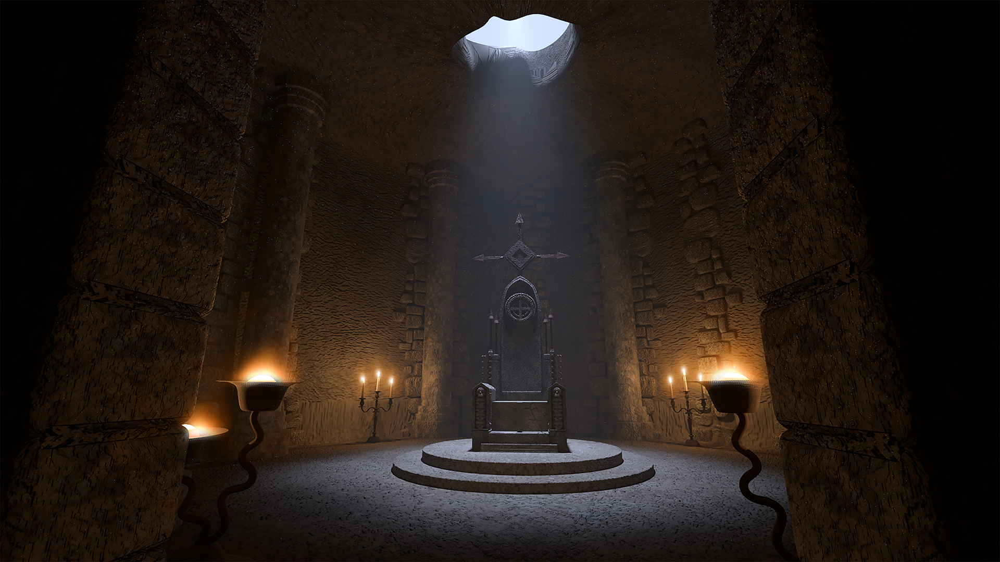
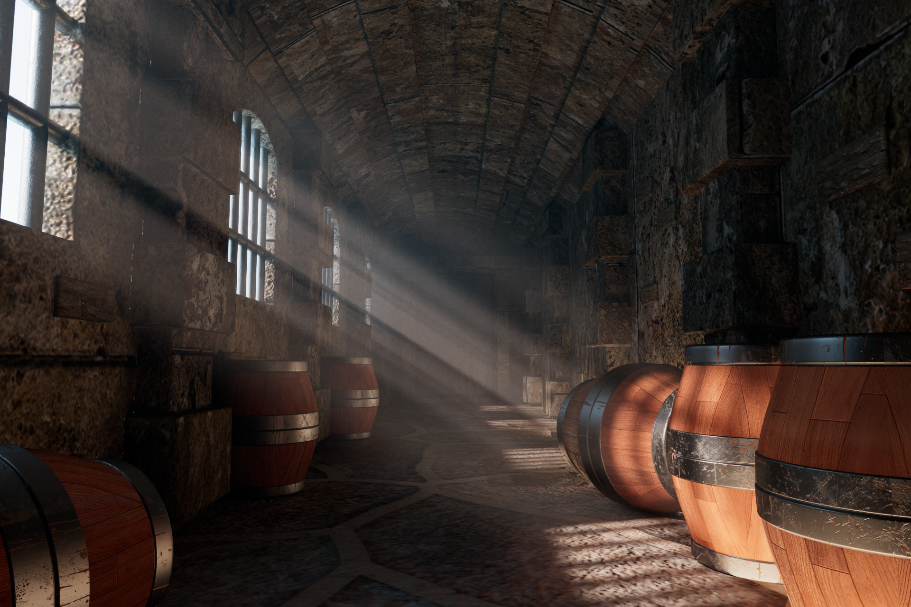
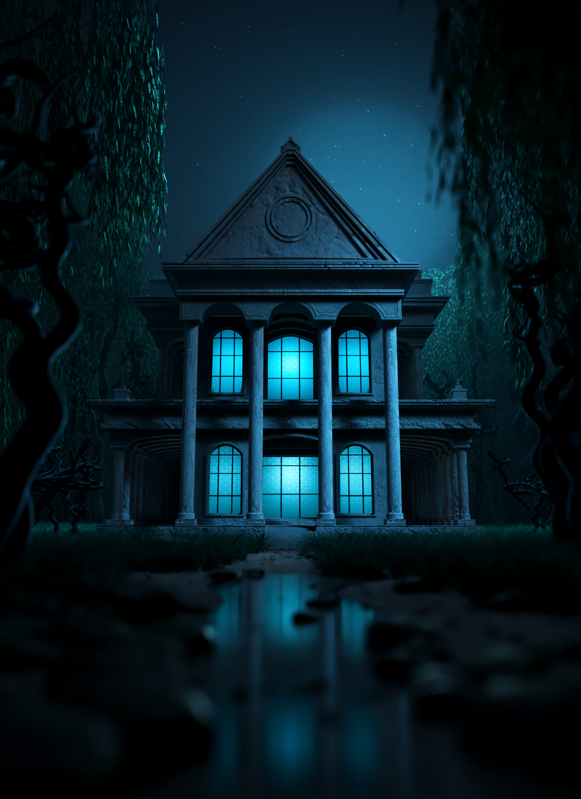
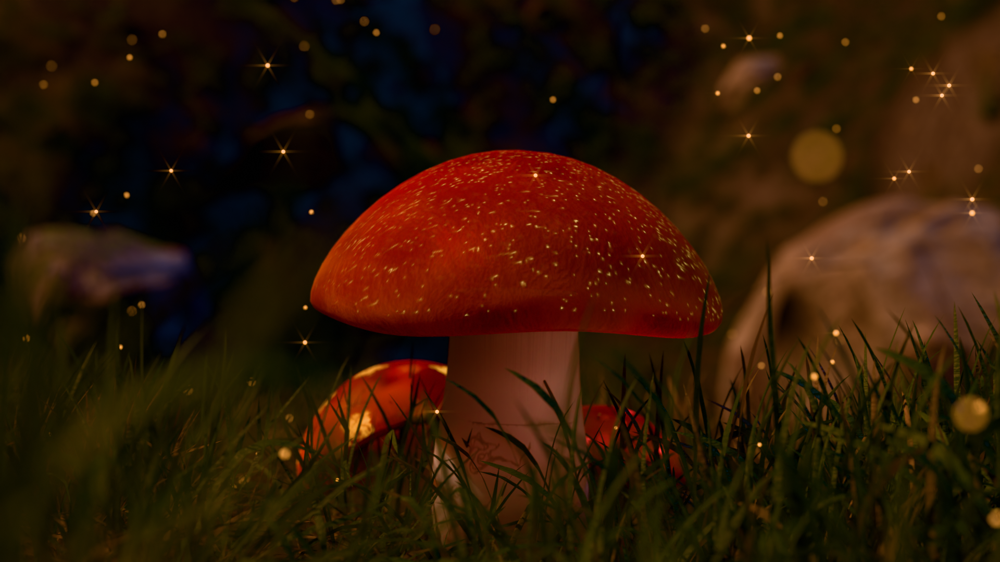
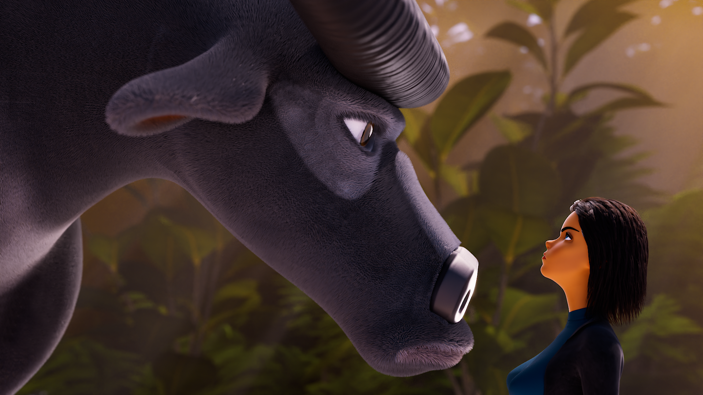

Lighting/Rendering Works.
This is a showcase of my lighting and rendering works.
NEW BEGINNING
The following stills showcase my lighting and rendering work from the New Beginning project. The scenes were rendered using V-Ray, incorporating a combination of V-Ray light shapes, environmental lighting, and volumetric effects.


ENVIRONMENTAL LIGHTING.
These are examples of environmental lighting and rendering work created using the Arnold render engine. The primary focus of this project was to achieve a strong cinematic composition.





SCENERY LIGHTING
The following images showcase scenery lighting work created using Blender Cycles. I modeled the environment, while the character was a free rig downloaded online and posed within the scene.


THE BULL AND BEAUTY.
This piece focuses on creating a sense of connection between two characters while experimenting with scale and background volumetric lighting. The rendering was completed using V-Ray.

STAGE LIGHTING.
These are examples of stage lighting and rendering work created using the Arnold render engine. The goal of this project was to experiment with the contrast between warm and cool lighting.